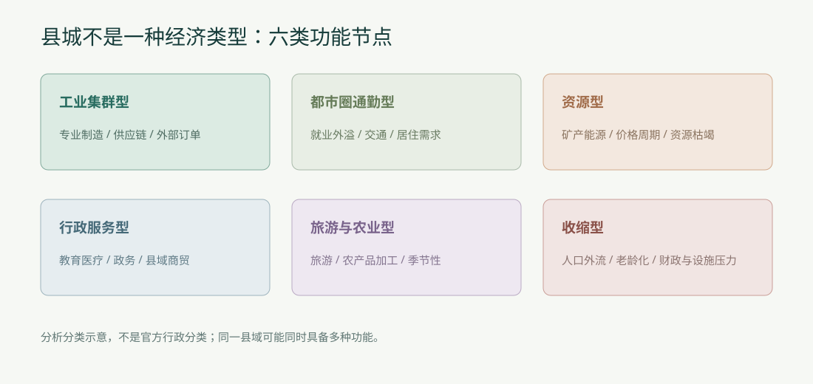

01｜人口总量下降与城市化率上升可以同时发生
国家统计局公布，2025 年末全国人口 140489 万人，其中城镇常住人口 95380 万人，占 67.9%；乡村人口 45109 万人，占 32.1%。同年全国人口减少 339 万人，自然增长率为 -2.41‰。[S1]
城市化率是城镇常住人口占总人口的比例，不等于城市人口总量必然增长，也不等于每一个县城都在增长。全国人口下降与城市人口占比提高并不矛盾：只要乡村人口下降得更快，城镇化率就可能继续提高。
02｜人口流动不是单向“内陆流向沿海”
2025 年全国农民工总量 30115 万人，其中本地农民工 12109 万人、外出农民工 18006 万人。外出农民工中省内流动 11241 万人，占 62.4%；跨省流动 6765 万人，占 37.6%。农民工平均年龄 43.3 岁，50 岁以上占 32.0%。[S2]
这意味着省内中心城市、地级市、县域工业节点和跨省迁移共同构成了人口流动网络。仅凭“沿海吸引人口”不能推出所有内陆县城都在衰退；更重要的是识别迁移目的地、就业地和家庭定居地是否一致。
03｜城市化的三种来源：迁移、自然增长和行政重分类
联合国《World Urbanization Prospects 2025》对中国 2010—2020 年城市人口增长进行了分解：农村向城市迁移贡献约 56%，行政区划调整贡献约 26%，城市内部自然增长贡献约 18%。[S3]
这组数据同时纠正两个极端说法：“中国城市化完全是行政区划调整出来的”不成立，因为迁移已经成为最主要来源；“城市化率上升完全等于人口迁移”也不成立，因为行政重分类和自然增长仍有贡献。
联合国还提示，常住人口城镇化率与户籍人口城镇化率存在差异。部分人口已经在城市工作生活，但公共服务、住房和社会保障的市民化仍需推进。国际报告的城市定义与中国行政区划不同，跨国比较时必须先统一统计口径。
04｜国家城镇化政策：从建新区转向人的市民化与分类施策
国务院 2024 年印发《深入实施以人为本的新型城镇化战略五年行动计划》，提出经过五年努力，常住人口城镇化率提升至接近 70%。重点包括农业转移人口市民化、潜力地区城镇化、现代化都市圈培育和城市更新。[S4]
行动计划强调常住地提供基本公共服务、推动随迁子女教育、扩大社保覆盖、稳定就业和住房保障。这意味着政策目标不只是提高城镇化率，而是提高人口真正融入城市的质量。
政策还提出分类施策：对城镇化率低、人口规模大的地区，协调推进工业化和城镇化；对人口持续集聚的地区，培育都市圈、促进中心城市与周边市县协同。它并没有要求所有县城以同样速度扩张。
05｜县城不是一种经济类型：至少六种功能节点

| 类型 | 增长来源 | 主要风险 | 观察重点 |
|---|---|---|---|
| 工业集群型 | 专业化制造、供应链、外部订单 | 单一行业周期、成本迁移 | 企业、出口、就业、供应链 |
| 都市圈通勤型 | 中心城市外溢、交通、居住 | 产业和税收留在中心城 | 通勤、就业地、轨道交通 |
| 资源型 | 矿产、能源、原材料 | 价格波动、枯竭、生态修复 | 储量、财政依赖、替代产业 |
| 行政服务型 | 政务、教育、医疗、商贸 | 财政供养人口多、市场有限 | 公共服务半径、财政收入 |
| 旅游农业型 | 旅游、农产品加工、生态服务 | 季节性、低薪岗位、产业链短 | 停留时间、复购、加工转化 |
| 收缩型 | 存量服务、传统产业和转移支付 | 青壮年外流、设施利用率下降 | 年龄结构、税基、设施空置 |
一个县可能同时具有工业、旅游和行政服务功能；主导功能也可能随时间变化。分类的目的不是给县城贴标签，而是避免用同一套增长逻辑评价所有地方。
06｜产业集聚：有园区不等于有产业
产业集聚的优势来自企业之间真实的采购、加工、研发、物流、人才和客户联系。园区只是空间载体，不能自动创造这些联系。判断园区是否形成产业集群，需要检查企业间采购关系、外部客户、专业人才、供应商、利润和补贴依赖。
如果企业主要依靠低价土地、财政补贴和行政招商，订单、技术和核心决策却在外地，当地可能获得投资额和短期就业，却未必形成高质量税基和本地供应链。
反过来，县域制造业并不必然落后。专业化产业集群可以利用较低土地成本、熟练劳动力和供应链配套，在全国市场形成竞争力。关键是企业能否在没有持续行政输血的情况下存活。
07｜房地产下行如何改变县城和城市群
2025 年全国房地产开发投资 8.2788 万亿元，同比下降 17.2%；新建商品房销售面积下降 8.7%，销售额下降 12.6%，年末商品房待售面积增长 1.6%。[S5]
区域差异明显：2025 年东部地区房地产开发投资下降 19.7%，中部下降 15.3%，西部下降 9.8%，东北下降 27.0%；新建商品房销售面积和销售额在各区域也有不同程度下降。[S5]
房地产影响家庭资产负债表、地方土地财政、建筑及上下游就业和人口定居选择。但全国投资下降不能直接证明某个城市人口一定流出；销售额下降也不能直接推出某个县城房价会按同一比例下降。需要结合人口、就业、库存、土地收入和产业结构。
08｜城市分化的真正机制：工作、服务与财政能力相互强化
一个城市能否持续吸引人口，通常取决于就业质量、工资预期、公共服务、居住成本、交通可达性和社会融入。就业机会是迁移的起点，但教育、医疗、养老、住房和社保接续决定家庭是否愿意长期定居。
人口集聚会提高专业化分工和服务密度，也会带来房价、通勤、土地和公共设施压力。城市发展不是“越大越好”，而是需要比较集聚收益与拥挤成本。人口流入是重要信号，但不是城市竞争力的充分条件；人口流出也不等于当地所有经济活动立即失去价值。
09｜日本经验：人口收缩不是把人都赶去东京
日本 2025 年人口普查速報显示，在 1719 个市町村中，1558 个（90.6%）人口较 2020 年下降；东京圈约占日本总人口的 30.1%。该数据为 2025 年人口普查速報，后续正式统计可能修订。[S6]
日本国土交通省推动“紧凑城市 + 网络”（Compact plus Network），通过立地适正化计划，引导居住、医疗、福祉、商业设施与公共交通相互衔接。截至 2026 年 7 月 31 日，已有 972 个城市制定或推进相关计划。[S7]
核心不是把所有人口集中到东京，而是在总体人口减少时，降低公共服务和基础设施的单位维护成本：让医疗、商业和交通服务在相对集中的节点持续可达，同时保留地区之间的交通网络。
但中日不能简单类比。日本市町村与中国县、县级市、地级市的行政边界、财政关系、户籍制度、人口密度和公共服务责任不同；日本 90.6% 的市町村人口下降，也不能直接推导中国 90.6% 的县城将衰退。
10｜反证：为什么“内陆没有前途”是过度概括
- 产业型内陆节点：中部和西部地区可能依靠制造业、能源装备、物流、农产品加工或区域供应链形成就业。
- 省内迁移：2025 年外出农民工中 62.4% 在省内流动，省会、地级市和县域工业节点都可能成为目的地。[S2]
- 都市圈外溢：外围县市可能依靠中心城市产业、交通和公共服务获得人口与企业外溢。
- 资源和旅游优势：资源型、生态型和旅游型地区仍有机会，但需评估周期风险、季节性和产业链深度。
- 人口减少不等于生产率下降：某些地区可能伴随产业升级和资源重新配置，必须用就业、产出和财政数据验证。
真正应该被否定的不是所有内陆县城，而是缺少可持续就业、产业联系、人口吸引力和财政来源，却持续依赖土地扩张、融资平台和行政投资维持表面繁荣的增长模式。
11｜县城与城市投资研究：建立八项指标卡
| 指标 | 推荐观察方式 | 常见误判 |
|---|---|---|
| 常住人口 | 连续 5—10 年、年龄结构、净迁移 | 用单年变化代替趋势 |
| 就业与工资 | 城镇就业、企业用工、工资、社保参保 | 只看 GDP，不看岗位质量 |
| 产业结构 | 龙头企业、供应链、出口、企业存活率 | 把园区面积当作产业规模 |
| 财政能力 | 本级收入、转移支付、土地收入、债务付息 | 只看财政总收入 |
| 房地产 | 销售、库存、开工、二手房和租金 | 把全国趋势套到县城 |
| 公共服务 | 医疗、教育、养老和交通可达性 | 只看设施数量，不看利用率 |
| 交通联系 | 到中心城市时间、通勤流、物流成本 | 只看高铁/高速是否通车 |
| 人口结构 | 劳动年龄人口、60+、儿童、家庭迁移 | 只看人口总量 |
如果没有县级长期人口、企业就业和财政数据，结论应保持在“候选类型”，而不是确定排名。
12｜结论与开放问题
中国城市分化，本质上是就业机会、产业链、人口迁移、公共服务、住房和财政能力的联合结果。县城不会因为行政级别低而必然衰退，内陆也不会因为地理位置而必然没有产业；但依靠土地扩张和行政投资、缺少稳定就业与真实企业现金流的地方，确实面临更大的调整压力。
未来更重要的政策问题，不是让每一个县城继续扩张，而是根据人口和产业实际，决定哪些地方需要继续集聚、哪些地方需要做强专业化产业、哪些地方应转向紧凑型公共服务网络，以及如何保障人口流出地区居民的基本公共服务。
相关研究
- 地方政府债务化解：置换、融资平台转型与财政关系重构：人口、房地产和土地财政如何影响地方资产负债表。
- 中国养老金体系：制度分层、财政统筹与代际可持续性：人口年龄结构如何改变公共财政和社会保障压力。
来源定位：正文 [S1]—[S7] 指向国家统计、国务院、联合国和日本政府原始资料。
参考来源
- 国家统计局，《中华人民共和国 2025 年国民经济和社会发展统计公报》，2026-02-28。原文
- 国家统计局，《2025 年农民工监测调查报告》，2026-04-30。原文
- 联合国 DESA，《World Urbanization Prospects 2025: Summary of Results》，2025-11。报告 PDF
- 国务院，《深入实施以人为本的新型城镇化战略五年行动计划》，国发〔2024〕17 号，2024-07-28。原文
- 国家统计局，《2025 年全国房地产市场基本情况》，2026-01-19。原文
- 日本总务省统计局，《令和 7 年国势调查 人口速報集計結果》，2026-05-29。速報 PDF
- 日本国土交通省，《立地適正化計画とコンパクト・プラス・ネットワーク》，更新至 2026-07-31。原文